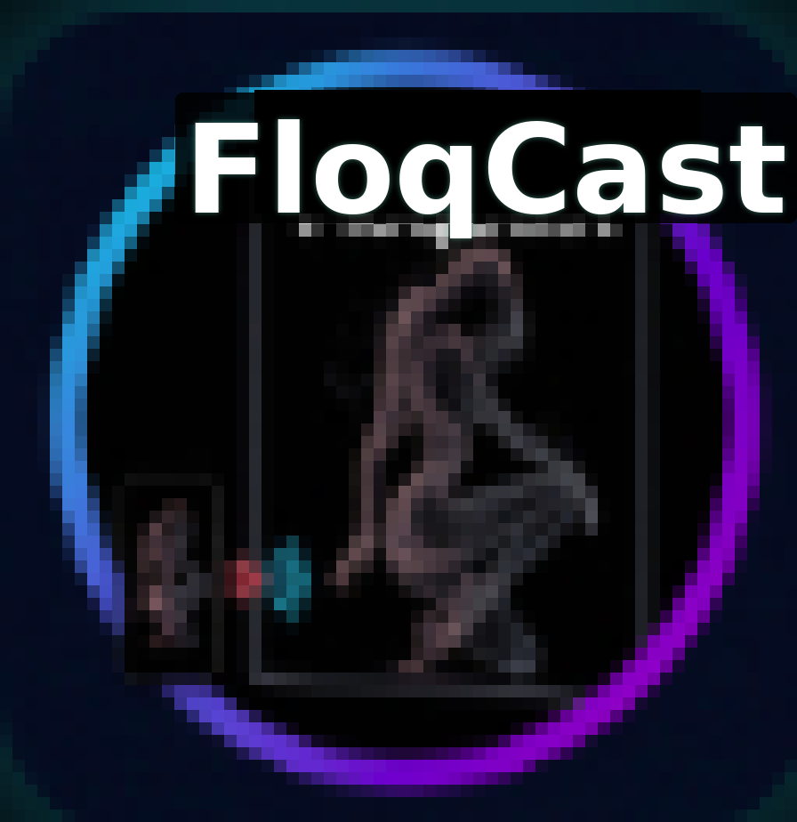
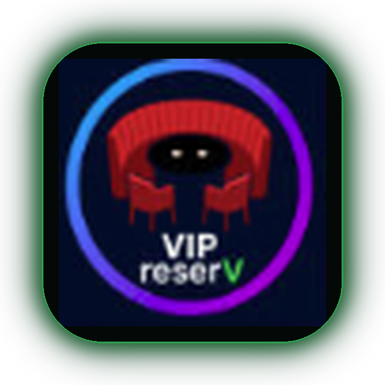
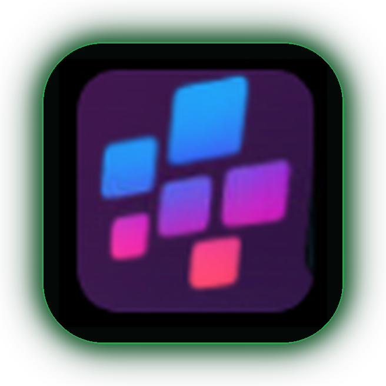
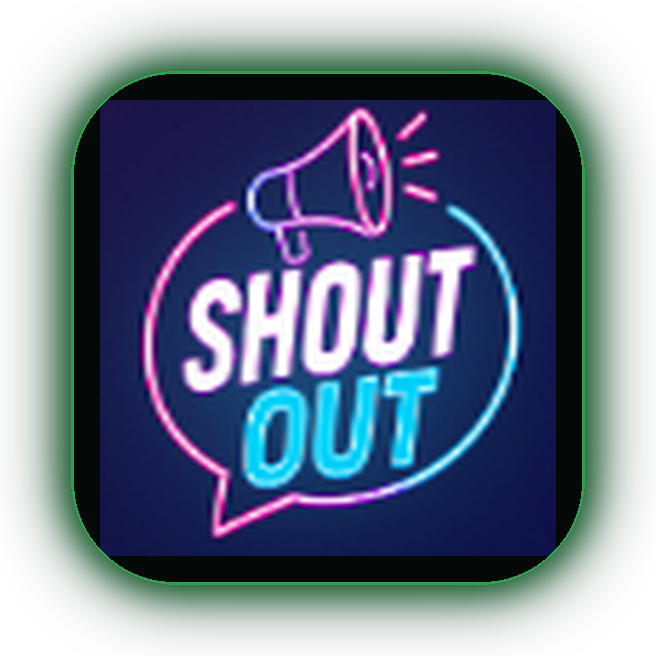

0) Your source marks (as uploaded)
Unframed — exact PNGs you sent for this review.
Your four source marks (floqCast, VIP reserV, FloqAi diamonds, SHOUT OUT), shown as-is, then in a
rounded square with a dark green backlit LED halo.
floqCast also has a larger in-mark “FloqCast” proposal.
Branch cursor/icon-square-green-halo-bbee.
Unframed — exact PNGs you sent for this review.
Same artworks, live CSS halo (what Search tiles could use without re-baking PNGs).
Left: source text size. Right: enlarged in-mark FloqCast (proposed), still in the green LED square. Inner cyan→magenta cast ring kept from your art.

Same treatment flattened into PNGs under images/review/actual-icons/*-framed-green*.png.


